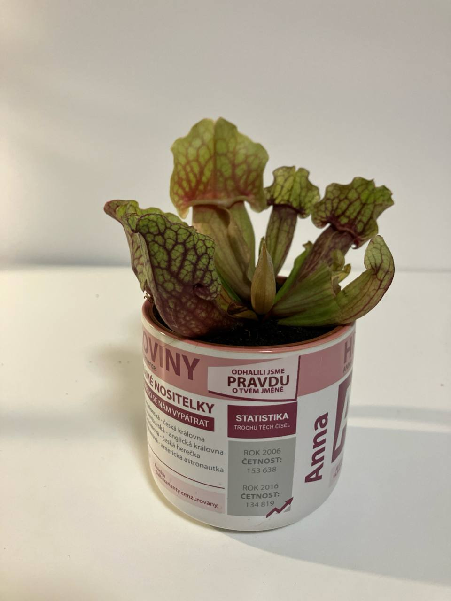

Activity
- Scheduled
- Feed 03-09-2024
- Repot 03-08-2025
Purple Pitcher Plant Care Guide
Environment
Light
- Bright Light: Purple Pitcher Plants thrive in bright light. They can handle direct sunlight but prefer bright, indirect light for most of the day. A south or west-facing window is ideal.
Soil
- Acidic Soil: Use a well-draining, acidic soil mix. A common mix is equal parts of sphagnum peat moss and perlite or sand. Avoid using regular potting soil as it is too rich in nutrients.
Temperature
- Cool to Moderate Temperatures: Purple Pitcher Plants prefer temperatures between 55-75°F (13-24°C). They can tolerate lower temperatures during their dormant period in winter.
Routine jobs
Watering
- Moisture: Keep the soil consistently moist but not waterlogged. Purple Pitcher Plants prefer boggy conditions, so the soil should never dry out completely.
- Water Quality: Use distilled water, rainwater, or reverse osmosis water to avoid mineral buildup. Tap water can harm the plant due to its high mineral content.
Feeding
- Insect Diet: These plants get most of their nutrients from insects they trap. You do not need to fertilize them. If grown indoors where insects are scarce, you can occasionally feed them with insects like flies or small crickets.
Potting
- Container Choice: Use a pot with good drainage. Plastic or glazed ceramic pots are preferable as they help retain moisture.
- Repotting: Repot every 1-2 years in spring to refresh the soil and provide more room for growth.
Troubleshooting
- Common Pests: Purple Pitcher Plants are generally pest-resistant, but they can occasionally suffer from aphids, mealybugs, or fungal infections. Treat pests with insecticidal soap or neem oil.
- Leaf Care: Remove dead or dying pitchers to prevent mold and encourage new growth.
Dormancy
- Winter Dormancy: Purple Pitcher Plants require a dormant period during the winter. Reduce watering and provide cooler temperatures (around 35-50°F or 2-10°C) for about 3-4 months. Normal care can resume in the spring.